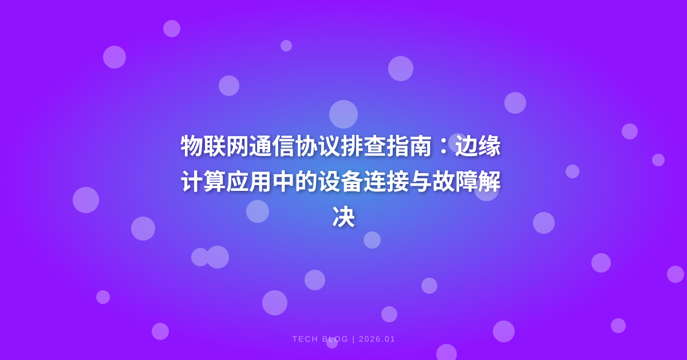

物联网和边缘计算的结合带来了设备连接的复杂性。本文提供了排查物联网通信协议问题的指南，涵盖了代码示例、常见问题及解决方案，以及最佳实践。
物联网通信协议排查指南：边缘计算应用中的设备连接与故障解决
引言：描述问题
在一个现代化的智能工厂中，数百个传感器和设备通过物联网（IoT）相互连接，实时收集和传输数据。然而，随着设备数量的激增，网络连接问题频繁发生，导致数据传输延迟和设备失联。这种情况不仅影响生产效率，还可能导致重大经济损失。因此，如何有效地排查和解决物联网通信协议中的故障成为了一个亟待解决的问题。
背景：为什么这很重要
物联网应用的成功依赖于设备之间的高效通信。边缘计算将数据处理推向靠近数据源的地方，从而减少延迟并提高响应速度。然而，设备连接的复杂性和多样性意味着通信协议的选择和实现至关重要。了解如何排查通信协议的问题能够帮助开发者和运维人员快速定位故障，提高系统的稳定性与可靠性。
解决方案：逐步实施与代码
步骤1：了解常见的物联网通信协议
在物联网中，常用的通信协议有 MQTT、CoAP 和 HTTP。每种协议都有其适用场景和优缺点，了解这些协议能够帮助我们更好地选择和排查问题。
步骤2：环境准备
为了进行设备连接和故障排查，我们需要设置一个测试环境。假设我们使用 Raspberry Pi 作为边缘计算设备，安装必要的库和工具。
# 更新系统
sudo apt-get update
sudo apt-get upgrade
# 安装 MQTT 客户端工具（如 mosquitto）
sudo apt-get install mosquitto mosquitto-clients
步骤3：实现 MQTT 连接示例
MQTT 是一种轻量级的消息传输协议，适用于低带宽和高延迟的网络环境。
import paho.mqtt.client as mqtt
# MQTT 服务器地址和端口
MQTT_BROKER = "broker.hivemq.com" # 公共 MQTT 代理
MQTT_PORT = 1883
TOPIC = "test/topic"

# 定义回调函数
def on_connect(client, userdata, flags, rc):
print(f"连接成功，返回码: {rc}")
client.subscribe(TOPIC) # 订阅主题
# 定义消息接收回调
def on_message(client, userdata, msg):
print(f"收到消息: {msg.payload.decode()}")
# 创建 MQTT 客户端
client = mqtt.Client()
client.on_connect = on_connect
client.on_message = on_message
try:
client.connect(MQTT_BROKER, MQTT_PORT, 60) # 连接到 MQTT 代理
client.loop_start() # 开始循环，处理网络流量
except Exception as e:
print(f"连接失败: {e}")
步骤4：实现 CoAP 连接示例
CoAP 是专为物联网设计的协议，适用于简单的设备通信。
from aiocoap import *
import asyncio
async def fetch():
protocol = await Context.create_client_context()
request = Message(code=GET, uri='coap://coap.me/niot') # 向 CoAP 服务器请求
try:
response = await protocol.request(request).response
print(f"响应: {response.payload.decode()}")
except Exception as e:
print(f"请求失败: {e}")
# 运行异步函数
asyncio.get_event_loop().run_until_complete(fetch())
步骤5：实现 HTTP 连接示例
HTTP 是最常用的协议，适用于大多数互联网应用。
import requests
url = 'https://api.example.com/data'
try:
response = requests.get(url)
response.raise_for_status() # 检查请求是否成功
data = response.json() # 解析 JSON 数据
print(f"获取到的数据: {data}")
except requests.exceptions.HTTPError as err:
print(f"HTTP 错误发生: {err}")
except Exception as e:
print(f"请求失败: {e}")
常见问题及解决方案
1. 设备无法连接到 MQTT 代理
问题：设备无法成功连接到 MQTT 代理。 解决方案：检查网络连接是否正常，确保 MQTT 代理的地址和端口正确。
2. 消息未能发送或接收
问题：消息发送后未能在订阅者端接收到。 解决方案：检查主题是否一致，并确保发布者和订阅者在同一时间在线。
3. CoAP 请求失败
问题：CoAP 请求返回错误。 解决方案：确认 URI 是否正确，以及 CoAP 服务器是否可访问。
4. HTTP 请求超时
问题：HTTP 请求超时，无法获取数据。 解决方案：检查网络状况，增加请求的超时时间。
5. 设备间的数据不一致
问题：不同设备间的数据出现不一致。 解决方案：使用统一的时间戳和数据格式，确保数据同步。
最佳实践：性能和安全提示
- 选择合适的协议：根据实际应用场景选择合适的通信协议，以提高性能和稳定性。
- 使用加密：在数据传输中使用 TLS/SSL 等加密机制，确保数据安全。
- 优化数据传输：减少数据包大小，避免不必要的数据传输，提升响应速度。
- 监控网络状态：定期监控设备连接状态和网络性能，及时发现并解决问题。
- 定期更新软件：保持所有设备和软件的及时更新，修复已知漏洞。
结论：总结与后续步骤
物联网通信协议的排查是确保边缘计算应用顺利运行的关键。通过了解不同协议的特性，实施有效的连接和故障排查策略，能够显著提高设备的稳定性和性能。接下来，可以深入学习每种协议的高级特性，或结合机器学习等技术实现更智能的故障检测与修复。